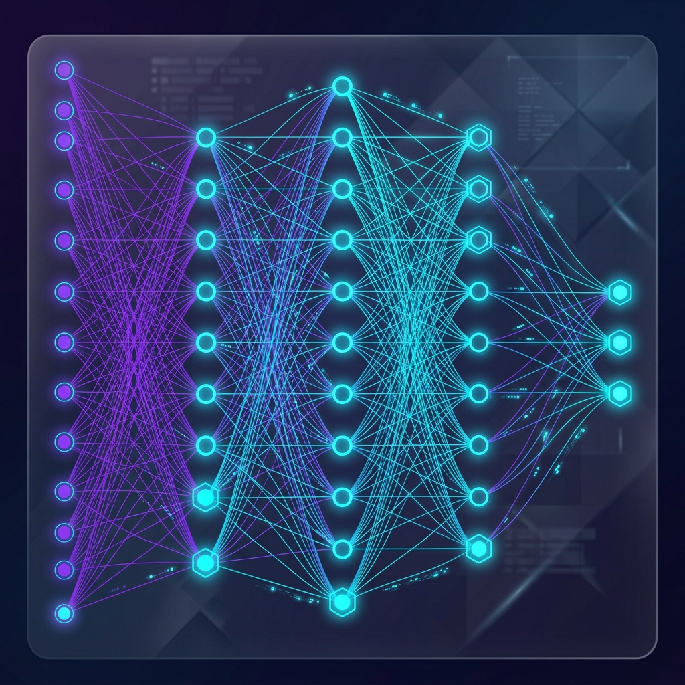
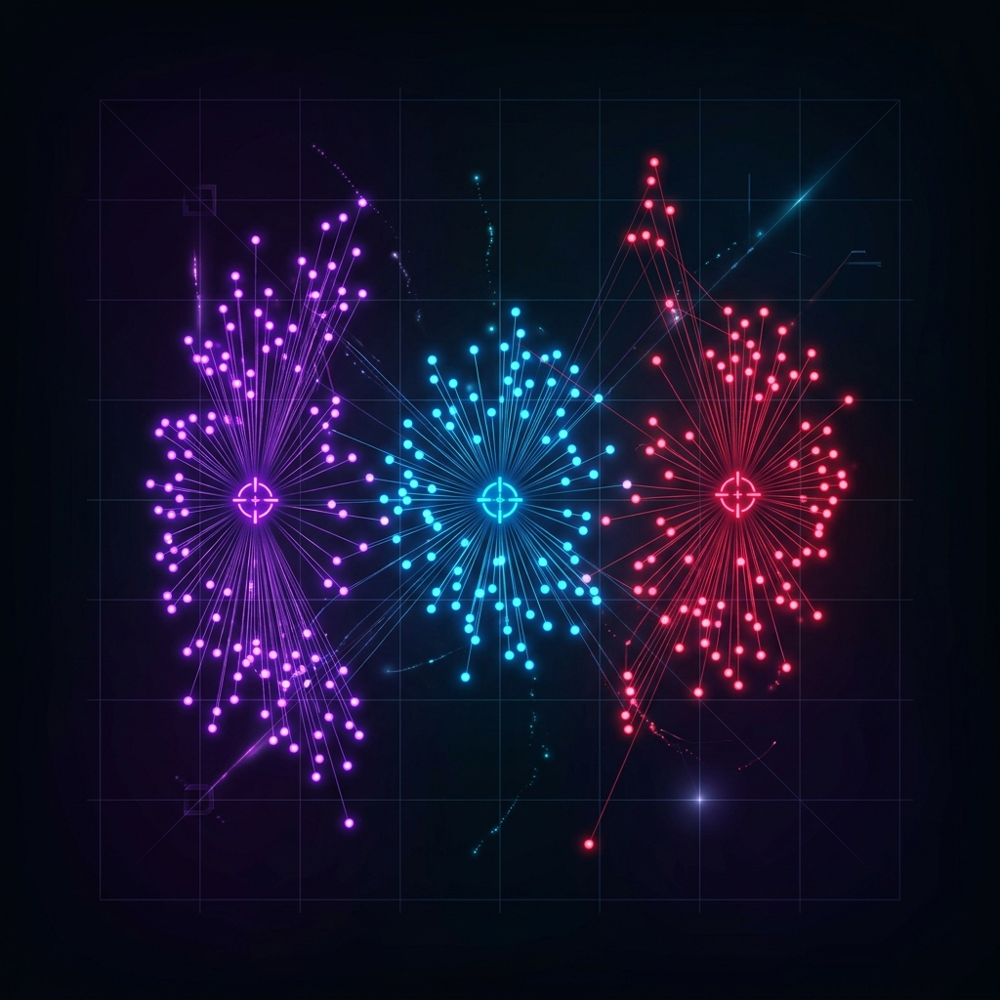
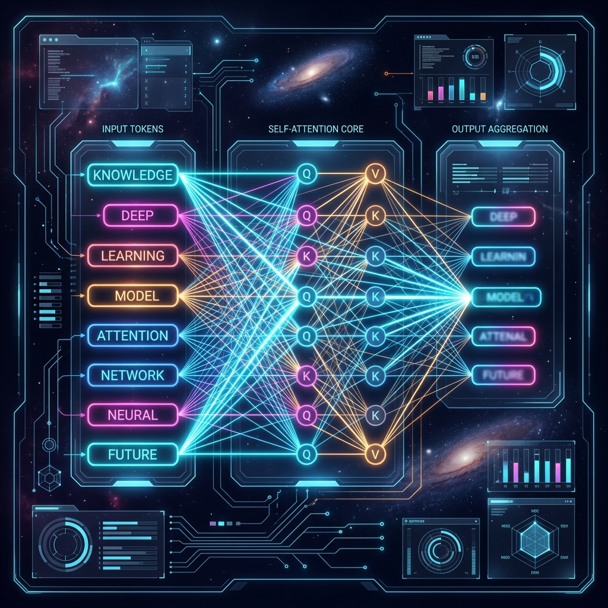

Step inside a premium interactive canvas. Engage with live hyperparameter simulators, trace a comprehensive modern curriculum, analyze complex deep architectures, and test your knowledge.
Click on the developmental milestones to explore the core syllabus topics, learning strategies, and recommended libraries.
Math & Python
CompletedSupervised & Unsupervised
ActiveNeural Networks & CV
UpcomingTransformers & LLMs
UpcomingPhase 1: Math & Python Basics
Understand optimization algorithms, read mathematical notation, and perform basic data engineering & exploratory data analysis.
Experiment with core ML optimization and fitting properties. Tweak learning rates or complexity settings and observe the adjustments instantly.
Visualize how a model converges or diverges on a cost function curve $y = x^2$ based on the learning rate.
Fit a polynomial model to noisy data points. Watch how a high polynomial degree leads to extreme overfitting.
Examine the foundational architectures of modern deep neural network frameworks.

The bedrock of deep neural structures. Features input layers, hidden layers with non-linear activation functions (ReLU, Sigmoid), and an output layer. Inputs flow forward, and errors propagate backward via gradient descent.

Algorithms like K-Means organize data points into localized clusters by computing distance vectors. Dimensionality reduction tools like PCA map complex datasets into lower dimensions while retaining maximum variance.

The catalyst behind Large Language Models (LLMs). The self-attention mechanism enables nodes to process word tokens simultaneously and dynamically weight contextual relevance across distant sentence components.
Challenge yourself on AI, Machine Learning, Deep Neural Networks, and NLP terms.
The quiz consists of 5 multiple-choice questions spanning regression, clustering, deep backpropagation, and Transformer layers.